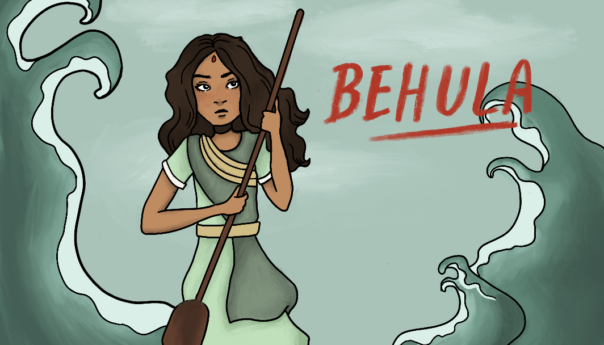

Usha, the daughter of Banasura, fell in love with Aniruddha the son of Pradyumna. Aniruddha was a
grandson
of lord Krishna. After their marriage they were reborn again as Behula and Lakshindar in next life and
married each other again.
Behula was the daughter-in law of Chand Sadagar of Champaknagar. According to myth, two beautiful
apsara's
of the kingdom of heaven, Usha and Aniruddha were cursed by Gods as per the plan of Goddess Manasa and
sent
to earth as Behula and Lakshinder - Behula as the only daughter of Say bene (or Sayven of Ujaninagar)
and
Lakshinder as the seventh son of Chand Sadagar.
Chand sadagar was a great devotee of Shiva and for certain reasons he hated Manasa. But Manasa had to
get
"Anjali" by Chand sadagar's right hand- the Bhaktasreshto to get position of Goddess in the heaven.
However,
Chand sadagar promised to himself that he will never give Anjali to Manasa by the hand he uses to give
anjali to Shiva. To get an anjali from Chand, Manasa took away his six sons. They died from poisonous
snake
bites and Manasa had absolute power over all snakes. These deaths infuriated Chand Sadagar even more and
he
vowed to save his last son, Lakhinder, in any way possible. Chand found a girl, Behula, whose destiny
spoke
that she will never be a widow. Chand got his seventh son, Lakshinder married with Behula. Chand also
had an
iron palace built without any hole so that not a single snake could enter the house.
Bishyakarma made it for the wedding night of Behula and Lakshinder. But due to the request of Manasa,
Bishyakarma kept a hole in the palace. The night came and Manasa sent her Kalnagini, the most poisonous
snake, to the iron palace and it crept into the room. Behula fell asleep due to a spell Manasa cast on
her.
When Kalnagini was going to bite Lakshinder, she saw that Behula had committed no sin for which she
might be
given such a harsh punishment. So kalnagini, with the help of the lower end of her body smeared the
parting
of Behula's hair with the oil of the lamp, which was a sin according to the Hindu mythology. After she
bit
Lakshinder, Lakshinder shouted aloud. Behula woke up and saw kalnagini slithering out of the room. In
anger,
she threw the jaanti towards kalnagini and the lower part of the snake's body was cut off. Kalnagini was
not
eager to bite Lakshinder; Manasa forced her to do so.
To get back her husband's life from the Gods in the heavens, Behula sailed with her dead husband in a
raft
towards Heaven. She faced many dangers during her incredibly long and difficult journey in the rivers.
After
reaching Heaven, she pleased all the Gods with her beautiful and enchanting dancing and got the Gods to
promise to give back her husband's life on the condition that Chand would give anjali to Manasa.
Desperate
to save his son's life, finally Chand gave in and gave the anjali by the left hand. Consequentlty Manasa
got
the position of Goddess in heaven and gave back the life of all the six sons of Chand.